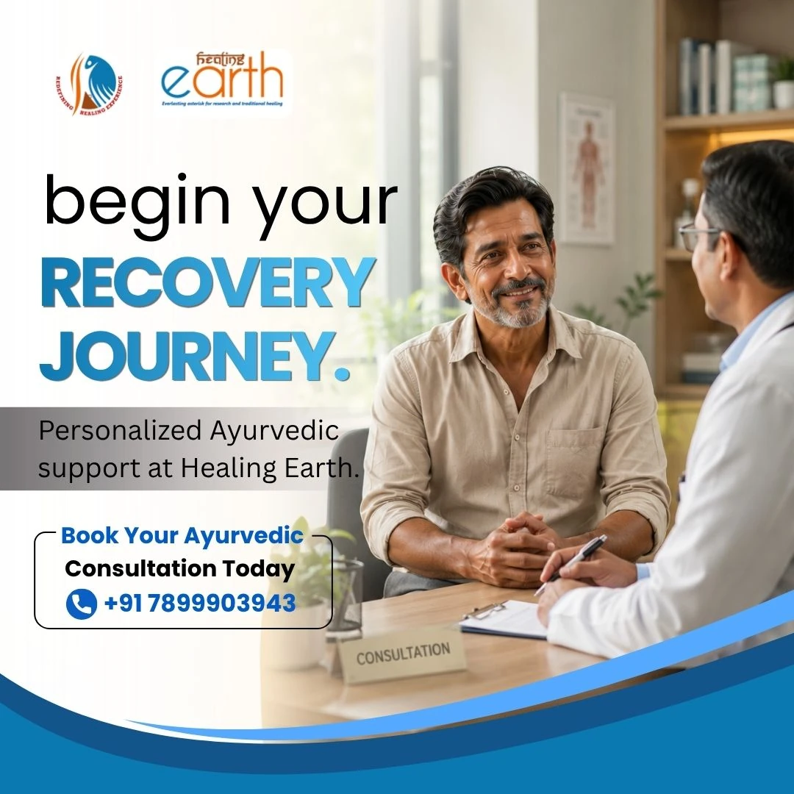
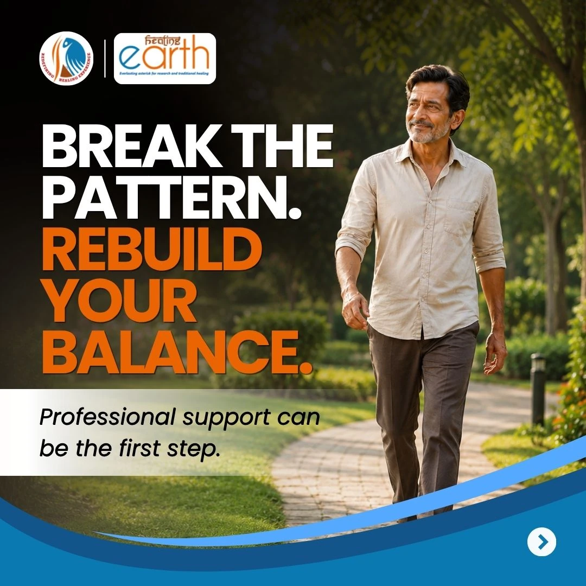
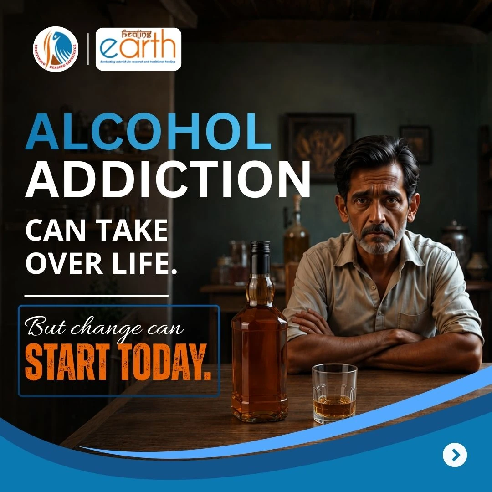
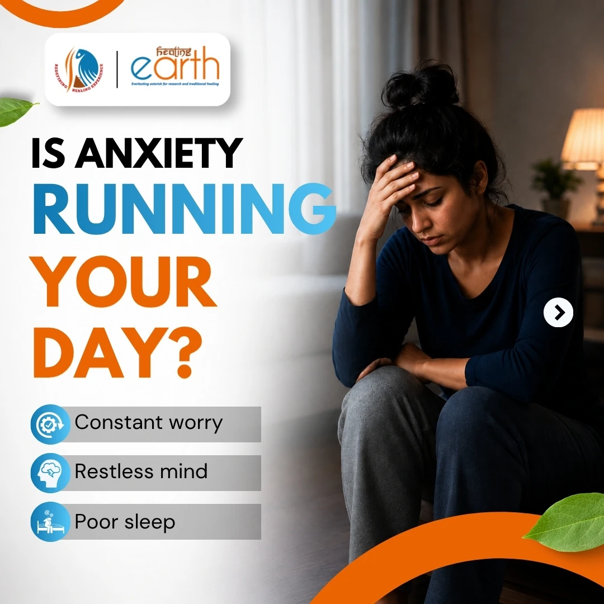
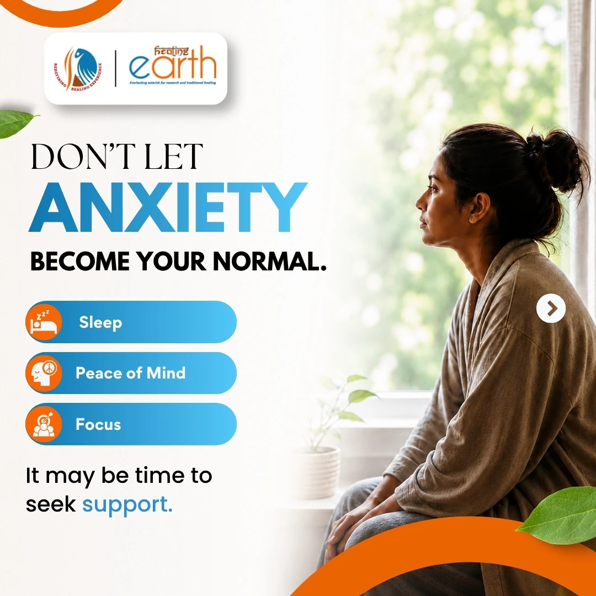
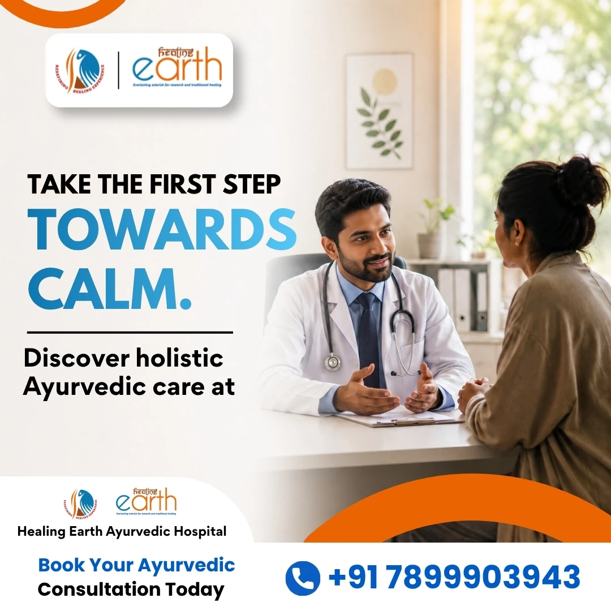
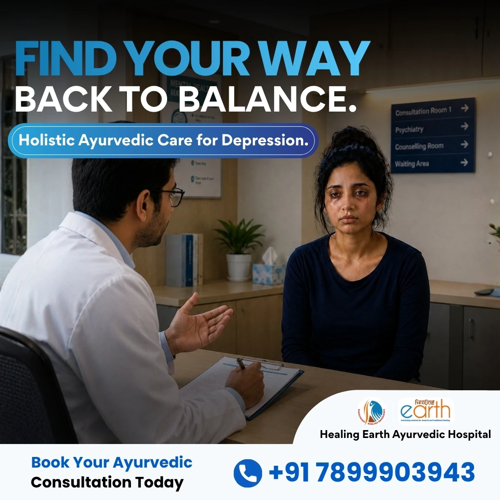
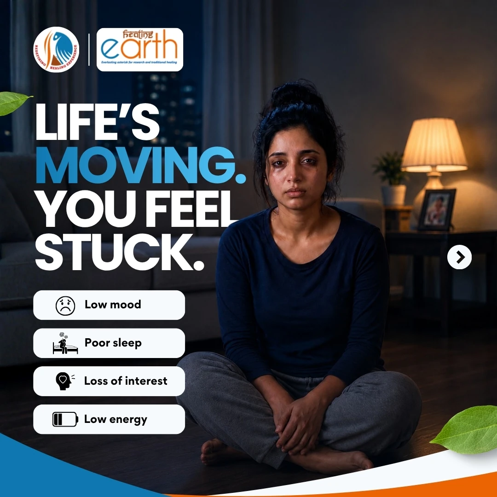
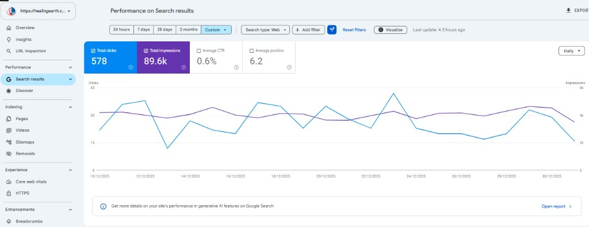
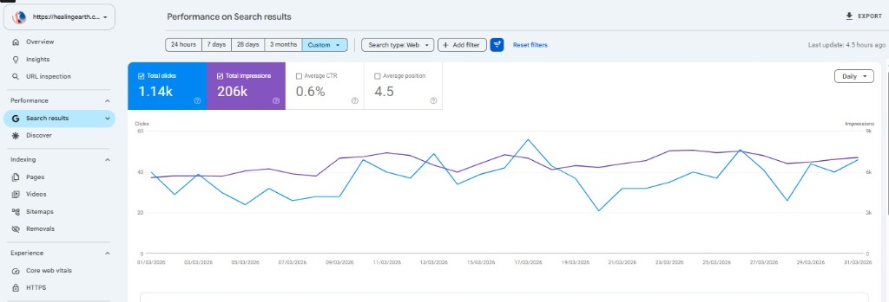

Healing Earth Ayurveda Hospital
Expanding from 2 departments to 7+ departments & 70+ Ayurvedic treatments (73 procedures), running 15 to 20 campaigns/month, and reaching ₹20L to ₹25L/mo (16× revenue, 100 OP) with 3 Layer Automation.

How we started and why Healing Earth was lagging
Experienced Ayurveda & proctology doctors, but patient enquiries were going cold due to manual follow up delays.

From 2 Departments to 7+ Departments, 70+ Treatments & 15–20 Campaigns/Mo
When Healing Earth joined D-Medva under the 3L Patient Plus package, they started with just 2 departments on their website, low search clicks (578/mo), and manual follow ups that caused patient enquiries to drop off.
We expanded their digital presence to 7+ departments and 70+ treatments (73 listed procedures), ran 15 to 20 targeted campaigns in a single month, doubled organic SEO clicks (578 → 1.14k), and connected every lead to 3 Layer Automation (WhatsApp, Auto Call & Campaign Workflow)—scaling to 100 OP consultations and ₹20L to ₹25L/mo revenue (16×).
Where They Were Lagging
-
Only 2 Website Departments: Started with just 2 departments online, leaving most of their Ayurvedic specialties and therapies unseen by patients.
-
Few Campaigns & Low Search Clicks: Limited campaign angles and stuck at 578 monthly clicks (Position 6.2) on Google Search.
-
Slow Manual Lead Replies: Reception delays in sending clinic details and answering calls during busy OP hours caused enquiries to go cold.
-
Low Consultation Volume: Needed a steady growth loop from specialist ads and organic search to booked OP consultations across multiple departments.
How We Brought Them Up
-
Expanded to 7+ Depts & 70+ Treatments: Built out 7+ specialty departments and a full treatments directory listing 73 Ayurvedic procedures.
-
15–20 Campaigns/Mo & 2× SEO Clicks: Ran 15 to 20 campaigns in 1 month across Paid Ads, SEO & Events while doubling Google clicks to 1.14k (#4.5 rank).
-
3 Layer Follow Up Automation: Instant WhatsApp bot replies, automatic call follow up, and campaign workflow tracking so zero leads go unanswered.
-
₹20L–₹25L/Mo Revenue (16× Growth): The growth loop of more departments, 15–20 monthly ads, SEO, and WhatsApp automation delivered 100 OP consultations and 16× monthly revenue.
How we run all 4 channels for Healing Earth
15 to 20 monthly paid campaigns, Top 5 Google SEO, GMB Local Maps, and instant 3 layer WhatsApp & Call automation.
4 Active Channels (3L Patient Plus Package)
Active 4 Channels
Paid Ads, GMB Maps, Website SEO & 3 Layer Lead Automation.
Paid Ads (Meta & Google)
15 to 20 campaigns/month across 7+ departments and 70+ Ayurvedic treatments.
Search Engine Optimization
Doubled organic clicks (2×), 206k impressions, and #4.5 Top 5 Google rank.
Website & 73 Procedures
Expanded website from 2 departments to 7+ departments and 73 listed procedures.
WhatsApp & Call Automation
Instant WhatsApp bot replies, auto call routing & CRM workflow tracking.
7+ Departments & 70+ Treatments
Expanded from 2 departments at launch to 7+ specialty departments (Ortho Neuro, ENT, Psychiatry, Surgery, Gyn, Peds, Skin) & 73 procedures.
15–20 Campaigns Run in 1 Month
More departments and treatments created more campaign angles—running 15 to 20 paid, SEO & event campaigns side by side.
₹20L–₹25L/Mo & 100 OP Snapshot
The growth loop—more departments, more treatments, and 15 to 20 monthly campaigns—drove 100 OP consultations and 16× revenue.
3 Layer Follow Up Automation
Every enquiry is replied to on WhatsApp, called automatically, and tracked in the campaign workflow toward a booking.

3 Layer Automation: How Every Lead Is Followed Up
Every enquiry gets an instant WhatsApp message, automatic call routing, and direct booking tracking.
Instant Reply
Sends clinic details and appointment reminders immediately.
Immediate Call
Triggers call follow up so no enquiry goes unanswered.
Direct Tracking
Moves leads from ad click to booking without manual spreadsheets.
Healing Earth Campaign Creatives & Ad Posters
15 to 20 monthly campaigns across 7+ departments and 70+ Ayurvedic treatments.
Healing Earth Ayurveda Hospital Campaign Creatives & Projects
healingearth.co.in · 7+ Departments · 70+ Treatments · 15–20 Campaigns/Mo







SEO, On-Page Optimization & Google Maps (GMB) Performance
Verified Google Search Console and Google Business Profile performance for Healing Earth Multi Speciality Ayurveda Hospital (healingearth.co.in)—doubling organic search clicks to 1.14k/mo (#4.5 Top 5 Rank) alongside 91,209 GMB profile views, 20,953 search appearances, 4,049 Google Maps direction requests, and 1,321 direct phone calls.




How We Optimized Healing Earth's 7+ Departments & Google Business Profile
-
2 → 7+ Department & 73 Procedure Pages: Built dedicated SEO pages across Ortho-Neuro, Proctology (Piles, Fissure, Fistula), Panchakarma, ENT, Gynaecology, Pediatrics & Dermatology.
-
High-Intent Ayurveda Keyword Mapping: Optimized title tags, meta descriptions, and treatment headings for "ayurvedic hospital bangalore" (2,928 searches), "best ayurvedic hospital in bangalore" (1,580 searches), and "leech therapy" (1,177 searches).
-
GMB Maps Call & Direction Optimization: Optimized specialty categories, treatment listings, and appointment links to generate 91,209 profile views, 4,049 Google Maps direction requests, and 1,321 direct phone calls.
-
2× Search Console Click Growth (#4.5 Rank): Doubled monthly organic clicks from 578 to 1.14k and grew search impressions 2.3× (89.6k → 206k) with a Top 5 average position (#4.5).


How We Transformed Healing Earth's Patient Acquisition Ads
-
From Basic Lead Forms → 3-Channel Patient Capture: Earlier, ads ran only on Instant Lead Forms (243 leads across 2 departments). Now, a single specialty (Proctology) runs 8 parallel campaigns combining WhatsApp Video Ads (281 conversations), Video Lead Forms (129 leads), and Direct Call Ads (50 calls).
-
10× Reach & 11.04L+ Monthly Impressions: Scaled monthly reach from 65,572 to 6,51,708 accounts and impressions from 1.63L to 11.04L+ in a single department, while running 15 to 20 campaigns across all 7+ departments.
-
Lower Cost Per Patient Enquiry (Down to ₹33.74/Call & ₹53.24/Lead): Reduced cost per lead from ₹116.81–₹312.67 down to ₹33.74 per direct phone call, ₹53.24 per video form lead, and ₹69.89–₹81.90 per WhatsApp consultation chat.
-
Free Medical Camp Drives + 3-Layer Automation: Paired Piles, Fissure & Fistula camp campaigns with instant WhatsApp greeting, D-Medva first-call screening, and CRM follow-up to convert enquiries into hospital OPD walk-ins.